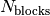
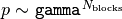
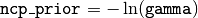

Events¶
-
class
astropy.stats.Events(p0=0.05, gamma=None, ncp_prior=None) [edit on github][source]¶ Bases:
astropy.stats.FitnessFuncBayesian blocks fitness for binned or unbinned events
Parameters: p0 : float (optional)
False alarm probability, used to compute the prior on  (see eq. 21 of Scargle 2012). For the Events type data,
p0does not seem to be an accurate representation of the actual false alarm probability. If you are using this fitness function for a triggering type condition, it is recommended that you run statistical trials on signal-free noise to determine an appropriate value ofgammaorncp_priorto use for a desired false alarm rate.gamma : float (optional)
If specified, then use this gamma to compute the general prior form, . If gamma is specified, p0 is ignored.
ncp_prior : float (optional)
If specified, use the value of
ncp_priorto compute the prior as above, using the definition . Ifncp_prioris specified,gammaandp0is ignored.Methods Summary
fitness(N_k, T_k)validate_input(t, x, sigma)Methods Documentation
-
fitness(N_k, T_k) [edit on github][source]¶
-
validate_input(t, x, sigma) [edit on github][source]¶
-